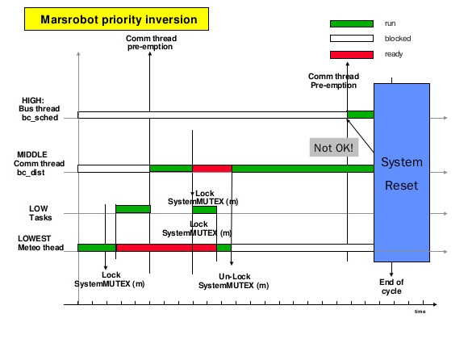

再次预告：期中测验
4.20 (下周一) 随堂测验 (14:00 开始, 16:00 结束)
- 一道上机题 (50%)
- 并发编程 (
threads.h), Online Judge 提交，但无评测结果- 一个问卷 (50%)
- 问卷系统提交
自觉维护学术诚信
- 正确性不作为评分依据
- 独立完成 (不借助互联网搜索、不讨论)
- 如有特殊困难不能参加，请由辅导员向我说明
评分标准
- 按时提交，得 100%
- 当天提交，得 80%
- 周三 (4.22) 前提交，得 70%
本讲概述
在中断/上下文切换机制上可以实现各种调度策略
- Round-Robin
- 多级反馈调度
- 完全公平调度 (CFS)
- 故事到此结束？
实际的处理器调度？
- CFS 回顾
- 优先级翻转
- 多处理器调度
CFS: 复习
让进程 (线程) 公平地共享处理器
记录每个线程的执行时间
- 每次中断时调度 (补偿) 执行时间最少的那个，使总体保持公平
优先级
- 使用 vruntime
- 高优先级的进程时间过得比较慢
- 低优先级的进程时间过得比较快
创建进程 (fork)
- 子进程继承父进程的 vruntime (位于同一起跑线)
睡眠和恢复
- 获得系统中最小的 vruntime
被低估的复杂性 (1)
单处理器调度：不仅是计算
线程不是
while (1)的循环进程/线程不是纯粹的计算或 (长时间) I/O
- 等待互斥锁/信号量
- 或是非常短暂的 I/O 等待 (比一个时间片短很多)
在此情形下，会发生什么？
- round-robin?
- 考虑三个进程/线程: producer, consumer,
while (1) - Lab 2 你们就会遇到这个问题了
- 主要是因为没有精确的时间统计
- 考虑三个进程/线程: producer, consumer,
- CFS?
- (似乎没问题？) 线程有精确的 accounting 信息
并发 bugs 还在等着大家呢！
- 处理器调度中有一类非常有趣的并发 bug
优先级反转 (Priority Inversion)
void bad_guy() { // 高优先级 while (1) { mutex_lock(&lk); ... mutex_unlock(&lk); } } void nice_guy() { // 中优先级 while (1) ; } void very_nice_guy() { // 最低优先级 while (1) { mutex_lock(&lk); ... mutex_unlock(&lk); } }
- very nice guy 在持有锁的时候让出了处理器……
- bad guy 顺便也无法运行了 (nice guy 抢在了它前面 👎)
The First Bug on Mars
Sojourner “探路者” (PathFinder), 1997 年 7 月 4 日着陆火星
- 大家出生前发生的事情，但我依然有印象
- 着陆几天后，出现系统重启和数据丢失
 硬件配置
硬件配置
- Lander: IBM RISC 6000 Single Chip (Rad6000 SC) 20 MIPS CPU, 128 MiB RAM, 6 MiB EEPROM
- 操作系统: VxWorks 实时操作系统
- 实时：任务可以在指定的时间内完成
- ASI/MET task: 大气成分监测 (低优先级)
bc_disttask: 分发任务 (中优先级)bc_schedtask: 总线调度 (高优先级)
- 操作系统: VxWorks 实时操作系统
- Rover: 0.1 MIPS Intel 80C85 CPU, 512 KiB RAM, 176 KiB Flash SSD
The First Bug on Mars (cont'd)

- (低优先级)
select -> pipeIoctl -> selNodeAdd -> mutex_lock - (高优先级)
pipeWrite -> mutex_lock
解决优先级反转问题
非实时系统：CFS 凑合用吧
- 实际情况太复杂了
实时系统：如何解决？
- 优先级继承 (Priority Inheritance)/优先级提升 (Priority Ceiling)
- 持有 mutex 的线程/进程会继承 block 在该 mutex 上的最高优先级
- 不总是能 work (例如条件变量唤醒)
- 在系统中动态维护资源依赖关系
- 优先级继承是它的特例
- 似乎更困难了……
- 避免高/低优先级的任务争抢资源
- 对潜在的优先级反转进行预警 (lockdep)
- TX-based: 冲突的 TX 发生时，总是低优先级的 abort
复杂系统的行为
复杂的系统，即便规则很简单，行为也可能很复杂
- 互斥锁 + 按优先级调度 → 优先级翻转
- Conway's Game of Life → Turing Completeness
- John Conway: 1937-2020
所以真实的系统充满了
- bugs
- 设计缺陷
- 安全漏洞
- ……
一入并发深似海，从此写对是路人
你们体会到 OSLab 的体验差了吧哈哈哈哈哈哈
- 实际中的并发程序，想写对？
根本不可能的
如果使用不同的优先级 (速度) 运行程序，是不是就能找到并发 bugs?
- Yes!
- 我们的工作: D. Chen, et al. Testing multithreaded programs via thread speed control. In Proc. of ESE/FSE, 2018. (科普版本)
- 我们是测试的专家，所以稍微出一下手，你们的程序就挂了
Linux Kernel 也有并发 bugs?
- 简直太多了……
- P. Fonseca, et al. SKI: Exposing Kernel concurrency bugs through systematic schedule exploration. In Proc. of OSDI, 2014.
被低估的复杂性 (2)
多处理器调度
我们的 CPU 里有多个共享内存的处理器啊！
多处理器调度的例子
- 组里有一台 AMD EPYC 7401 x 2
- 共 96 个逻辑 CPU, 128 GiB RAM
- 创建 192 个线程，每个 CPU 上有两个线程执行
- 然后刚好前 48 个 CPU 上的 96 个线程 sleep 了
- 后 48 个 CPU 在出力 (per-cpu runqueue = 2)
- 前 48 个 CPU 在围观 (per-cpu runqueue = 0)
- 怎么办？
道理很简单：允许处理器间的线程迁移
每隔一段时间，负载低的 CPU 可以从负载高的 CPU 中偷一些线程
- (load balancing)
- 但策略就复杂了
如何定义 “负载”？
每隔多久做一次 load balancing?
如何做 load balancing?
例子
如果前 48 个 CPU 上的 96 个线程 sleep 了
- 我们该不把所有线程均分到 CPU?
- 如果 sleep 了 1us 就被唤醒？
Load balance 面对的难题 (trade-off)
线程在处理器之间迁移是需要代价的
- 多处理器之间的数据传送 (这是小事)
- 额外的 cache/TLB miss
迁移？可能过一会儿还得移回来
不迁移？造成处理器的浪费
- 一核出力，他人围观
多处理器调度：被低估的复杂性
“And you have to realize that there are not very many things that have aged as well as the scheduler. Which is just another proof that scheduling is easy.”——Linus Torvalds, 2001
Linus 以为调度是个挺简单的问题？
- As a central part of resource management, the OS thread scheduler must maintain the following, simple, invariant: make sure that ready threads are scheduled on available cores.
- As simple as it may seem, we found that this invariant is often broken in Linux. Cores may stay idle for seconds while ready threads are waiting in runqueues.
- J. Lozi, et al. The Linux scheduler: A decade of wasted cores. In Proc. of EuroSys, 2016.
- 这篇 paper 在狂黑 Linus 😂
- 多处理器调度依然是 open problem
- J. Lozi, et al. The Linux scheduler: A decade of wasted cores. In Proc. of EuroSys, 2016.
多处理器调度的几个挑战
实际情况 (1): 多用户、多任务
还是组里服务器的例子……
- 马上要到 paper deadline 了，A 和 B 要在服务器上跑实验
- A 要跑一个任务，因为要调用一个库，只能单线程跑
- B 跑并行的任务，创建 1000 个线程跑
- CFS 会发生什么？
- 提示: CFS 公平地在线程之间共享 CPU
更糟糕的是，优先级解决不了这个问题……
- B 不能随便提高自己进程的优先级
- “An unprivileged user can only increase the nice value and such changes are irreversible...”
Linux Control Groups (cgroups)
man 7 cgroups
- 没有 cgroups 就没有 Docker
- 也就没有 Online Judge
- (在课程最后专题讲解时会涉及)

实际情况 (2): Big.LITTLE/能耗
处理器的计算能力并不相同——均分 workloads 会让小核上的任务饥饿
处理器的 Power Curve 是非线性的

对移动平台至关重要 (能耗 vs. 延迟 vs. 吞吐量)
- 频率越低，IPC (Instruction per Cycle) 和能效都更好
实际情况 (3): Non-Uniform Memory Access
线程看起来在 “共享内存”
- 但共享内存却是 memory hierarchy 造就的假象

- producer/consumer 位于同一个/不同 module 性能差距可能很大
实际情况 (4): CPU Hot-plug
😂😂😂 我讲不下去了
- 实在是太复杂了
- 我不是代码的维护者，并不清楚这些细节
- 把上面都加起来
- 这得考虑多少情况，写多少代码……
- 把上面都加起来
多处理器调度的研究机遇
数据中心的处理器调度
互联网企业如何为数十亿用户提供低延迟高质量的服务？
高优先级的任务 (搜索、购物车、……) → 质量必须得到保证
- Amazon: 100ms 延迟 = 少卖 1% 的货物
- 想想淘宝/京东/拼多多...的 1% 是多么天大的数额……
低优先级的任务 (小广告投放、索引、转码、……) → 尽可能把服务器填满
- 估计 Google 有 2.5 million 台服务器 (2016)
- 提高 1% 的利用率都节约巨大的机器/能量
数据中心的处理器调度 (cont'd)
如何把任务分配到 1,000,000 台机器上？
- 容器集群 (Kubernetes, Docker Swarm, ...)
- 依然热门的操作系统研究领域
- (延伸阅读)
如何在一台机器上保证高优先级任务执行的效率？
- cgroup + 优先级？
- 没那么简单
- 并行的任务可能会占用 I/O, pollute cache/buffer, ...
- 就算有绝对高的优先级
- 在混合部署的时候延迟依然会增长
- (依然是 open problem)
甚至……有些基本假设都是不成立的
例子: more CPU time, more progress
我们课堂上的例子就可以 challenge 这一点
- sum-atomic.c 创建 4 个
do_sum执行
void do_sum() { for (int i = 0; i < 10000000; i++) asm volatile("lock addq $1, %0": "=m"(sum)); }
$ time taskset -c 0 ./sum-atomic.out sum = 40000000 (0.168s) $ time taskset -c 0,1 ./sum-atomic.out sum = 40000000 (0.587s)
- 分配了 1/2 的处理器资源，反而加速了 3.5 倍
- 系统里进程的行为和交互是非常复杂的……; NUMA 里尤其重要
- (依然是 open problem)
异构计算系统
完成 “同一件事” 的部件可能不止一个
- CPU, GPU, NPU, DSP, DSM/RDMA/远程执行
- M. S. Gordon. COMET: Code offload by migrating execution transparently. In Proc. of OSDI, 2012.
调度日益复杂的系统：难题
一个巨大的 design space
- 建模
- 理解 workload (过去发生了什么)
- profiling 和 trace; PMU
- 理解 workload (过去发生了什么)
- 预测
- 试图预知未来可能发生什么
- CPU 里非常常见的技术: branch prediction/BTB; prefetching; speculative/run-ahead execution; ...
- 试图预知未来可能发生什么
- 决策
- 如何调整系统的行为，使得约束 (如公平) 满足，且整体效率更高？
- 例如, migration or not?
- 如何调整系统的行为，使得约束 (如公平) 满足，且整体效率更高？
AI and everything 时代的到来
- 我们开始有 FPGA/硬件加速器 (NPU, TPU, ...)
- M. Mass, et al. Learning-based memory allocation for C++ server workloads. In Proc. of ASPLOS, 2020.
Takeaways and Wrap-up
- 机制
- 中断/系统调用时，进入操作系统代码执行
- 操作系统代码可以选择任何一个线程/进程继续执行
- 设计 rock-solid 的机制，支持任何策略
- 策略
- Round-Robin, MLFQ, CFS, ...
- 根据实际情况 (workload) 尝试各种策略
- 真正的 system: 需要在非常复杂的情况下工作
kernel/sched/fair.c总共有 10979 行代码 (5.6.3)- 教科书/文档上完全是 overly simplified 描述
- 但也有非常多的研究机遇——世界还太不完美，需要你改进
复习题
- 阅读: J. Bouron, et al. The battle of the schedulers: FreeBSD ULE vs. Linux CFS. In Proc. of USENIX ATC, 2018.
- 开始做 Lab2!